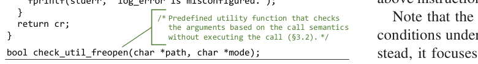
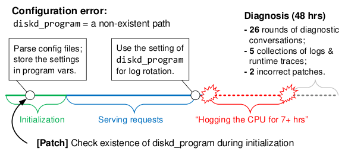
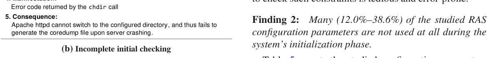
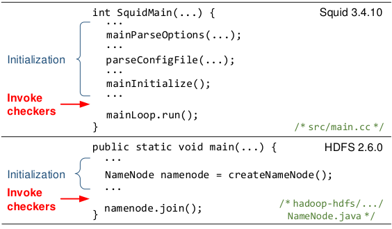
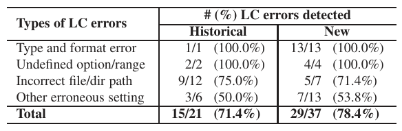
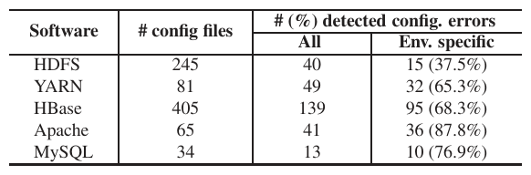
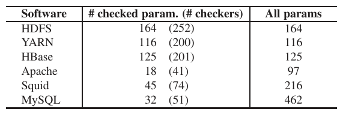
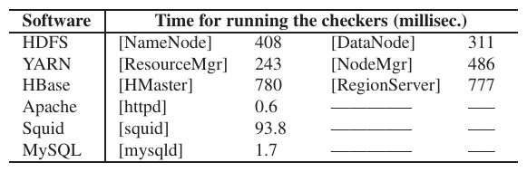

Early Detection of Configuration Errors to Reduce Failure Damage
This page was written by an AI model to give a high-level overview of the paper. Please check the paper for detail: USENIX.
Configuration errors are a leading cause of severe, large-scale failures, and the worst ones are not caught by the system's own startup checks. Many configuration parameters, especially those controlling reliability, availability and serviceability (RAS) features such as fail-over, backup and error handling, are not needed during initialization and so are not checked then. An error in such a parameter stays latent until the parameter's value is finally used, often much later and under a failure or special condition, by which point the damage is already happening. The paper calls these latent configuration (LC) errors. Using data from a storage company's customer issues, latent errors account for 75% of high-severity configuration incidents and take noticeably longer to diagnose than non-latent ones.
Existing approaches fall short in two ways. Diagnosis and troubleshooting tools help after a failure but do not prevent it. Automatic detection tools mostly learn "normal" values from large collections of independent configuration settings across many machines, but data-center deployments propagate the same configuration to many nodes, so the settings are not independent and there is little to learn from; these tools also struggle with inherently system-specific values (paths, IPs, domain names) and with error types outside their predefined templates. The one constraint-free exception, conf_spellchecker, infers a parameter's type from source code but cannot capture how the program actually uses the value, so it misses most constraints beyond "is this value usable at all."
The paper's key idea is that the program's own later use of a configuration value is itself an implicit, high-fidelity check, it is just applied too late. PCHECK turns this implicit check into an early one: for each configuration parameter, it statically extracts the instructions that would consume the parameter's value, and generates a checker that emulates that consumption at the system's initialization phase, before the system starts serving requests. If the emulated execution produces an anomaly, such as an exception, a failed system call, or an error-logging path, the checker reports a configuration error right then, instead of weeks or months later.
Mechanically, PCHECK performs inter-procedural, context- and field-sensitive static taint tracking from the program's configuration-getter calls to find every instruction that transforms, propagates or uses a given parameter's value; it backtracks to statically determine the values of any other variables those instructions need; it rewrites instructions that would have side effects (file writes, process exec, network sends) into safe check utilities that validate arguments without performing the operation; and it wraps the result in a checker function that the developer wires in at the end of the system's initialization code. No manual constraint specification and no large configuration datasets are required.
Built on LLVM and Soot for C and Java systems, PCHECK is evaluated on 58 real-world LC errors (37 newly discovered by the authors' study and 21 historical ones) across six mature systems: HDFS, YARN, HBase, Apache httpd, Squid and MySQL. It detects 75+% of these LC errors at startup, 31% more than conf_spellchecker, with setup effort under 10 specification lines for most systems and checker-running overhead under one second.

Key takeaways
- Latent configuration (LC) errors live in parameters that are checked only implicitly, when their value is finally used, often during fail-over or other rare, late-stage execution. They account for 75% of high-severity configuration issues in the paper's industrial data.
- A study of six mature systems finds 14.0% to 93.2% of RAS-related parameters have no initial correctness check at all, and 4.7% to 38.6% are subject to LC errors as a result.
- PCHECK's idea: statically extract the instructions that later consume a parameter's value and run them, safely, at initialization, so the program's own usage code becomes the early check.
- Side effects are prevented by rewriting risky calls (file opens, execs, network I/O) into check utilities that validate arguments without performing the real operation; anomalies are captured via exceptions, system/library error codes, and abnormal-termination hints.
- On 58 real LC errors, PCHECK detects 75+% at startup (31% more than conf_spellchecker) and, applied to 830 real configuration files, finds 282 true errors with only 3 false positives, at sub-second overhead.
From usage code to an early checker
How the study found the problem, how PCHECK extracts and safely emulates configuration-consuming code, and how the generated checkers are deployed.
1 · Background: RAS configurations and how they are checked
The study examines six mature, widely-deployed systems, focusing on configuration parameters tied to Reliability, Availability and Serviceability (RAS) features such as fail-over, error handling, backup, recovery, and error logging, because errors here tend to be the most latent and the most damaging.
| System | Description | Language | Total params | RAS params studied |
|---|---|---|---|---|
| HDFS | Distributed filesystem | Java | 164 | 44 |
| YARN | Data processing | Java | 116 | 35 |
| HBase | Distributed DB | Java | 125 | 25 |
| Apache httpd | Web server | C | 97 | 14 |
| Squid | Proxy server | C/C++ | 216 | 21 |
| MySQL | DB server | C++ | 462 | 43 |
The authors inspected the code that checks each RAS parameter at initialization (if any) and the code that later uses it, then verified every suspected LC error by injecting the configuration and triggering the real manifestation condition (for example, killing the active HDFS NameNode to trigger auto-failover).
2 · The problem: why these parameters stay unchecked until too late
Two real cases motivate the study. In Squid, a bad path for the diskd_program parameter, used only for log rotation, was undetected at startup; it caused 7+ hours of system hanging and 48 hours of diagnosis before developers patched in an existence check, a patch the authors show is still incomplete (it misses permission errors).

In MapReduce, a mapred.local.dir path with the wrong owner was not used until job execution; by the time the runtime exception was caught, restarting only re-triggered the same error in an infinite loop, prompting the reporting user to explicitly ask that the parameter be "checked at initialization time."
The study's three findings explain why this keeps happening:
| System | Studied RAS params | No initial check at all | Not used during init | Subject to LC errors |
|---|---|---|---|---|
| HDFS | 44 | 41 (93.2%) | 17 (38.6%) | 17 (38.6%) |
| YARN | 35 | 29 (82.9%) | 9 (25.7%) | 9 (25.7%) |
| HBase | 25 | 18 (72.0%) | 3 (12.0%) | 3 (12.0%) |
| Apache | 14 | 4 (28.6%) | 4 (28.6%) | 3 (21.4%) |
| Squid | 21 | 9 (42.9%) | 4 (19.0%) | 3 (14.3%) |
| MySQL | 43 | 6 (14.0%) | 6 (13.9%) | 2 (4.7%) |
| Total | 182 | — | — | 37 (20.3%) |

HDFS and YARN rely heavily on "lazy" evaluation (parsing and using a value only when immediately needed), so most of their RAS parameters have no dedicated checking code at all. Apache, MySQL and Squid do check types and ranges at startup, but their checks are often incomplete, missing constraints such as file permissions that only matter at the point of actual use (as in the Apache core-dump directory example above). 11 of the 37 newly discovered LC errors were confirmed or fixed by developers after the authors reported them.
3 · PCHECK overview and design challenges
PCHECK takes a system's source code (LLVM IR for C, Soot Jimple for Java) and, for every recognized configuration parameter, generates a checker: a self-contained function that re-executes the instructions that would consume the parameter's value and reports an error if that execution shows an anomaly. Three challenges drive the design: how to emulate the later-use execution automatically; how to do so without side effects on the running system or its environment, since the checker runs inside the same process; and how to turn a successful (or failed) emulation into an explicit error report.
4 · Identifying starting points
Every configuration-consuming execution begins where the value is first loaded, so PCHECK needs the program variables that hold each parameter's value. Developers supply a short specification of the system's configuration-retrieval interface (for example, the getter functions and the class that declares them), typically under 10 lines even for large systems like HDFS, because most mature systems already have a small, uniform set of such interfaces.
5 · Extracting the instructions that use a configuration value
From each starting variable, PCHECK runs forward static taint tracking, following data-flow dependencies (assignment, casts, arithmetic and string operations) but deliberately not control-flow dependencies, to extract every instruction that touches the value without over-tainting the rest of the program. The analysis is inter-procedural (configuration values commonly cross function calls), context-sensitive (it tracks call sites to backtrack from callee to caller) and field-sensitive (values are often stored in objects or structs). If a tainted value gates a branch whose body also uses the value, PCHECK keeps that control dependency so the emulation does not reach code the real execution never would.
6 · Producing execution context
Extracted instructions often reference other, "dependent" variables not defined within the extracted set. PCHECK backtracks each one, intra-procedurally and then inter-procedurally, and includes it only if its value is itself derived from a configuration value or otherwise statically determinable; variables that come from runtime inputs, network reads, or indeterminate globals are dropped, along with the instructions and everything downstream of them. This keeps checkers self-contained and prevents emulating execution with guessed inputs.
7 · Preventing side effects
Because checkers run inside the live process, PCHECK must guarantee no internal or external side effects. Internally, it never lets a checker write a global variable directly; it copies global values into checker-local variables instead. Externally, calls that touch the filesystem, network or process state (such as freopen, exec, file creation or deletion) are rewritten to call predefined check utilities that validate the same arguments (for example with access and stat instead of actually opening a file) without performing the operation. Calls PCHECK does not model, or whose side effects are unknown, are conservatively removed along with their dependents.
8 · Capturing anomalies as evidence of errors
Successfully running a checker is not itself a report, PCHECK needs to recognize when the emulated execution went wrong. It uses three error identifiers: Java runtime exceptions caught around the checker body; system- and library-call return codes and errno for C programs; and program-level anomaly hints such as exit, abort, false assertions or error-logging calls that PCHECK locates during instruction extraction and instruments into the checker. A checker with none of these identifiers is dropped, since it could never produce explicit error evidence.
9 · Encapsulation, invocation, and implementation

- PCHECK clones the extracted instructions and their context into a checker function, inlining called procedures and merging checkers that turn out to be equivalent or redundant subsets of one another.
- When a parameter is used along multiple distinct execution paths, PCHECK generates one checker per path and reports an error if any of them fails.
- Checkers are inserted at a location developers annotate as the end of the system's initialization phase, for example just before Squid starts its request loop or before an HDFS NameNode joins the cluster, so privilege drops and other setup steps have already happened.
- Checkers whose instructions would already have executed before reaching that invocation point are discarded as redundant, since any error there would already have surfaced.
- For time-of-check-to-time-of-use (TOCTTOU) exposure, checkers can optionally be re-run periodically in a separate thread rather than only once at startup.
- PCHECK is implemented on LLVM (for C) and Soot (for Java); it outputs modified bitcode or bytecode with checkers inserted, and provides tuning and operational interfaces so developers or sysadmins can disable individual generated checkers.
Results from applying this pipeline are covered in the Evaluation tab.
Evaluation
Detection effectiveness on real LC errors, results on real configuration files, checker counts, and runtime overhead, as reported in the paper.
The evaluation uses no synthetic or fuzzed errors (most of those are caught by existing startup checks and so are not LC errors). Instead it uses real-world LC errors and real-world configuration files, and compares PCHECK against the only prior constraint-free detection tool, conf_spellchecker.
| Item | As stated in the paper |
|---|---|
| Hardware | 4-core, 2.50 GHz processor on a local network; for distributed systems (HDFS, YARN, HBase) peer nodes are on the same local network |
| Error benchmarks | 58 real-world LC errors: 37 newly discovered (§2 study) plus 21 historical ones from prior configuration-error datasets, across HDFS, YARN, HBase, Apache, Squid, MySQL |
| Real configuration files | 830 files collected from the systems' official mailing lists and forums such as ServerFault and StackOverflow (all systems except Squid) |
| Baseline | conf_spellchecker, a state-of-the-art static tool that infers configuration types from source code |
| Metrics | % of LC errors detected at initialization; # true errors found in real configuration files; # parameters and checkers generated; checker running time (ms); false positive rate |
PCHECK detects 75+% of real LC errors at startup, beating conf_spellchecker by 31%

What it shows. The table breaks detection down by error type and by benchmark (historical vs. new) as a fraction detected out of the total of that type. Type-and-format errors and undefined-option/range errors are detected 100% of the time in both benchmarks. Incorrect file/directory paths are detected in 75.0% (9/12) of historical and 71.4% (5/7) of new cases. Other erroneous settings are detected in 50.0% (3/6) of historical and 53.8% (7/13) of new cases. Overall PCHECK detects 71.4% (15/21) of historical and 78.4% (29/37) of new LC errors, 7 (33.3%) and 11 (29.7%) more than conf_spellchecker on the same two benchmarks respectively.
What to take from it. PCHECK is strongest on errors with straightforward code patterns independent of runtime state (types, formats, defined option sets) and on the majority of file-related constraints, because most file parameters flow into recognized APIs such as open, fopen, or FileInputStream. Its advantage over conf_spellchecker comes from checking the actual usage semantics (for example, whether a file needs to be read-only or writable) rather than just inferring a type and testing generic readability/writability. Misses are concentrated where usage is unknown (values concatenated into shell commands passed to system()) or context is indeterminate (paths built from dynamic, request-time data).
Applied to real configuration files, PCHECK finds 282 true errors with only 3 false positives

What it shows. Running the generated checkers on the 830 real-world configuration files yields 282 true configuration errors across HDFS, YARN, HBase, Apache and MySQL, with a false-alarm count of three (two in YARN, one in HBase, both traced to the static analysis incorrectly skipping a control-dependent branch). A large share of the reported errors, ranging from 37.5% (HDFS) to 87.8% (Apache) by system, are environment-specific: the settings are syntactically valid and may even be correct on their original host, but violate the current machine's environment (undefined environment variables, non-existent paths, unreachable addresses).
What to take from it. Because PCHECK emulates execution on the system's own native environment rather than treating values as string literals, it naturally catches this environment-specific class of errors that dataset- or literal-based detectors are agnostic to. The false-positive rate is low overall (for example 1.7%, 2 of 116 parameters, for YARN, the system with the most false checkers) and the paper notes such checkers can simply be disabled by developers or administrators.
Checker generation is complete for lazily-evaluated systems and well bounded everywhere

What it shows. For HDFS, YARN and HBase, PCHECK generates checkers for every recognized parameter (164, 116 and 125 respectively, matching their full parameter counts), because these systems' getter functions are the natural starting point and capture the full path from parsing to use. For Apache, Squid and MySQL, which parse and assign settings to program variables before PCHECK's analysis starts, PCHECK generates checkers for only a subset of parameters (18 of 97, 45 of 216, and 32 of 462 respectively), producing 41, 74 and 51 total checkers; many boolean/numeric variables are used only for branch control with no error identifier, and many others are only touched before the checker-invocation point and so are discarded as redundant.
What to take from it. The gap between languages reflects where in the pipeline PCHECK can start tainting from, not a fundamental limitation of the approach. The paper attributes the remaining gaps to dependence on runtime state and to customized APIs (for example Apache's APR string operations built on internal memory pools) that would need program-specific modeling. Despite path-explosion risk from multiple execution paths per parameter, merging equivalent checkers and eliminating redundant ones keeps the total checker counts manageable.
Checking overhead is sub-second and dominated by file and network checks

What it shows. Measured on the 4-core, 2.50 GHz test machine, running all of a process's checkers takes 408 ms (HDFS NameNode), 311 ms (DataNode), 243 ms (YARN ResourceManager), 486 ms (NodeManager), 780 ms (HBase HMaster) and 777 ms (RegionServer) for the Java systems; for the C systems it takes 0.6 ms (Apache httpd), 93.8 ms (Squid, dominated by a parameter that checks a public IP's reachability) and 1.7 ms (MySQL).
What to take from it. Because checkers run once at initialization (or periodically in a separate thread, not on the request path), even the slowest case (under 800 ms) is negligible relative to normal startup time. The paper notes checkers currently run sequentially and are independent, so parallelizing them is a straightforward way to cut this further, though it was not implemented in the evaluated prototype.
FAQ
Q·What exactly makes a configuration error "latent"?▾
The parameter it corrupts is not needed during system initialization, so no code path checks or even reads its value until much later, often only under a special condition such as a failure, fail-over, backup, or log rotation. The error sits dormant, possibly deployed to many machines, until that late usage finally exposes it, by which point the resulting downtime has often already happened.
Q·How is this different from ordinary configuration errors that get caught?▾
Non-latent errors are caught by checks that already run at startup (type checks, range checks, and so on). The paper's industrial data shows latent errors are rarer than non-latent ones but cause 75% of high-severity issues and take longer to diagnose, because by the time they manifest the system is often already in a bad state.
Q·Why can't existing automatic detection tools just be pointed at these parameters?▾
Most existing tools learn "normal" settings from large collections of independent configurations across many machines. In cloud and data-center deployments the same configuration is propagated to many nodes, so the settings are not independent and there is little to learn from. These tools also struggle with values that are inherently system-specific (paths, IPs, hostnames) and are usually limited to the error types their predefined constraint templates cover.
Q·Does PCHECK require developers to write constraint rules for every parameter?▾
No. PCHECK derives checks automatically from the program's own code that consumes the configuration value, rather than from manually specified rules. Developers only supply a specification of the configuration-retrieval interface (so PCHECK can find starting variables) and an annotation of where initialization ends (so PCHECK knows where to invoke the generated checkers).
Q·How does PCHECK avoid actually performing dangerous operations, like deleting a file, while "emulating" execution?▾
It rewrites instructions that would have external side effects (file opens, process exec, network I/O) into check utilities that validate the same arguments without performing the real operation, for example checking file access and type with access and stat instead of calling freopen. It also avoids internal side effects by never letting a checker write to the program's real global variables, copying their values into local checker variables instead.
Q·What happens when PCHECK can't determine the value of a variable a checker needs?▾
If a dependent variable's value cannot be statically determined, for example because it comes from a network read or an indeterminate global, PCHECK drops the instruction that uses it along with everything downstream of it in that checker. This trades completeness for safety: the checker only ever runs with values it can compute ahead of time.
Q·How does a checker decide that something is actually wrong?▾
It looks for three kinds of evidence during the emulated run: a Java runtime exception caught around the checker; a failing return code or errno from a system or library call in a C program; or an "anomaly hint" instruction, such as exit, abort, a failed assertion, or error logging, that the original code would have executed. If none of these would ever fire, PCHECK does not generate a checker for that code path at all.
Q·Does running all these checkers slow down startup?▾
Barely. In the evaluation, running all of a process's checkers took at most about 780 ms (HBase's HMaster), with most systems well under that, and the heaviest cost comes from file- and network-reachability checks. Checkers run once at initialization, or periodically in a background thread to catch time-of-check-to-time-of-use issues; they do not run on the normal request path.
Q·What kinds of errors can PCHECK not catch?▾
Two main classes. First, "legal" misconfigurations: values that are syntactically and semantically valid for the code but still produce the wrong behavior, such as an undersized heap or an overly small timeout; detecting these needs dynamic resource and performance profiling, which is outside PCHECK's static, anomaly-based checking. Second, errors that only manifest through runtime inputs or workload-dependent execution, or whose necessary context cannot be computed statically, since PCHECK's emulation needs a self-contained, statically determinable execution path.
Q·How does PCHECK compare to conf_spellchecker specifically?▾
conf_spellchecker infers a configuration value's type from the source code and applies a generic check for that type, for example flagging a file parameter only if the file is "neither readable nor writable." PCHECK instead emulates the actual usage code, so it catches finer-grained constraints conf_spellchecker's type-only heuristic misses, such as a file that needs to be writable but is read-only. In the evaluation PCHECK detects 33.3% and 29.7% more LC errors than conf_spellchecker on the historical and new benchmarks respectively.
Q·Does PCHECK work the same way for C and Java programs?▾
The underlying taint-tracking, context-production, side-effect-prevention and anomaly-capture logic is the same, but the implementation differs by toolchain: C programs are analyzed and instrumented in LLVM IR, Java programs in Soot's Jimple IR, and anomaly capture uses language-appropriate mechanisms (Java's Exception hierarchy versus C's return codes and errno).
Q·Where exactly do the generated checkers get invoked?▾
At a location developers annotate as the end of the system's initialization phase, meaning the point just before the system starts serving user requests or workloads or joins a cluster, for example right before Squid's main request loop or before an HDFS NameNode calls join() to enter the cluster. This is also after any user/group privilege switch, so checking results reflect the system's actual running privileges.
access/stat instead of actually calling freopen) to validate the call's arguments without performing the real operation.getInt/getString call) a system uses to retrieve configuration values from parsed settings into program variables; PCHECK uses a short developer-supplied specification of this interface to find its analysis starting points.errno as evidence of configuration errors.